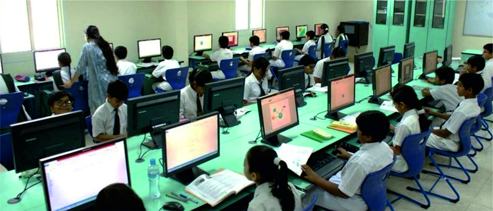
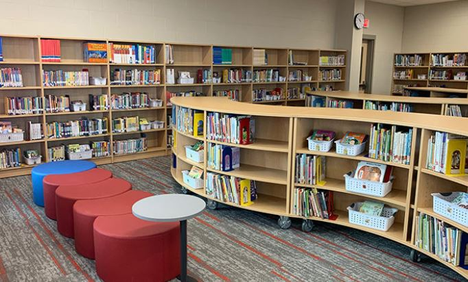
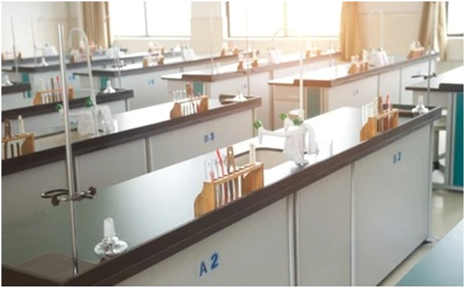

Computer Center
The computer center is designed to provide students with access to Information Technology, enhancing their analytical skills and fostering their creative talents as they learn new concepts. By utilizing interactive software programs, students of all ages can develop their strengths and improve their weaker areas. The center promotes team spirit and a sense of belonging to the school community. Equipped with updated software, guided by a skilled computer teacher, and featuring projectors with smart boards, the computer center offers an innovative and engaging learning experience.
Smart Class
The classrooms feature a state-of-the-art Innovated Teaching System (ITS), which includes a versatile interactive whiteboard and a sophisticated projection system. Teachers use digital content daily, projecting it onto the board to explain concepts with animations, graphics, videos, and presentations. This interactive learning method is highly enjoyable for students. Additionally, the computer system is designed to foster team spirit and a sense of belonging within the school community.
Library
Our library is a well-ventilated and spacious area, equipped with the latest learning materials, digital resources, and designated silent zones. It provides essential resources for both students and teachers, facilitating a smooth learning process. The library encourages students to develop good reading habits, enhance their research skills, and foster rational thinking. As a vital center for learning, it aims to promote curiosity, innovation, and problem-solving skills, benefiting students in various aspects of their lives.
Laboratory
Our latest modular laboratories for Biology, Physics, and Chemistry are designed to provide quality education and enhance hands-on learning experiences. These labs aim to help students develop problem-solving and critical thinking skills, ensuring they gain practical knowledge and a deeper understanding of scientific concepts.